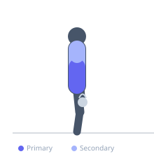
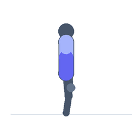

Exercise guide / Overhead Single-Arm Kettlebell Waiter Carry
Overhead Single-Arm Kettlebell Waiter Carry
The single-arm overhead kettlebell waiter carry challenges the entire lateral and anti-rotation core stabilization system by requiring the athlete to walk while holding a kettlebell locked out overhead in one hand. The overhead unilateral load creates a large lateral flexion and rotational demand on the contralateral core musculature, the shoulder girdle stabilizers, and the thoracic spine extensors simultaneously. It is both a core stability and shoulder integrity exercise that is highly transferable to functional strength tasks.
Primary muscles
internal oblique
external oblique
transverse abdominis
Secondary muscles
deltoid lateral
infraspinatus
trapezius upper
Stabilizers
erector spinae
gluteus medius
Equipment
Kettlebell


Starting position
- Clean and press a kettlebell to full lockout overhead in one hand. Stand tall with the arm straight, elbow locked, bicep beside the ear.
Setup
- Begin with a light-to-moderate weight to establish shoulder stability and walking pattern before increasing load.
Steps
- Step 1: Lock the kettlebell out overhead with the working arm straight and elbow fully extended.
- Step 2: Pack the shoulder by depressing the scapula and externally rotating the arm.
- Step 3: Walk at a controlled pace for the prescribed distance or time.
- Step 4: Keep the torso upright — resist any lateral flexion toward the weighted side.
- Step 5: At the end of the distance, carefully lower the kettlebell and switch hands.
Coaching cues
- Bicep beside the ear — arm is a pillar
- Walk tall — do not lean
Breathing
- Breathe normally throughout. Maintain a constant bracing level.
Range of motion
- Walk with full arm extension maintained. Distance typically 20–40 metres per set.
Tempo
- Moderate walking pace. Controlled steps.
Common mistakes
- Allowing the elbow to bend — the arm must remain fully locked out
- Laterally flexing the trunk toward the weighted side — the spine should remain perfectly vertical
Safety
- Ensure full shoulder external rotation and scapular depression before beginning — a loose overhead position is a safety risk
Training
- strength: 20–40 reps
- strength: 3–4 sets
- Rest: {'strength': 90}